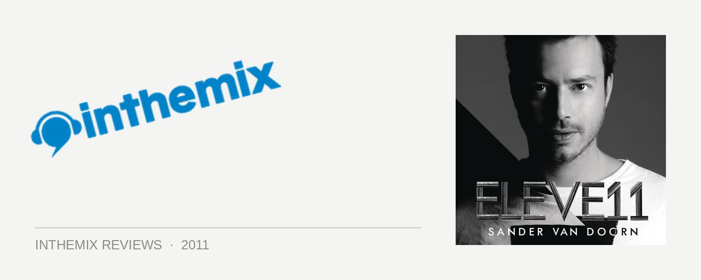

Sander Van Doorn - Eleve11
How to face the challenge of that “difficult second album”? Holland’s Sander van Doorn rose to prominence as one of the leading supporters of the tech trance sound, but he’s since then he’s transformed into a DJ/producer superstar who’s proved infinitely more versatile. While never turning his back on the trance scene, he shifts to mainroom anthems and underground tech house with equal ease. Doorn’s 2008 debut Supernaturalistic featured plenty of his distinctive tech trance bombs, though as a whole it lacked cohesion. However, he’s sought to step this up on his sophomore effort Eleve11.
In the same way Doorn draws the different elements together in his polished DJ sets, he’s sought to capture that versatility here. Accordingly, Eleve11 is a much more considered and thoughtful affair, with plenty of attention given to pacing, as well as seeing him working extensively with vocalists for the first time. He’s attempted to craft ‘songs’, without edging out the underground elements of his sound.
Eleve11 begins superbly with an organ interlude that builds into crashing rock drums, before rolling into Love Is Darkness – a gothic tech trancer he unveiled earlier this year, featuring the unusual vocal talents of Carol Lee, and a great indication of how Doorn has lived up to his promise of approaching vocals in a different way. This leads straight into the album’s other hit single Koko, which scored anthem status at the WMC in March, Ibiza and beyond. Playfully contrasting a whistling melody with a dramatic symphonic hook, it’s been fine-tuned by Doorn for the big rooms, and sees him flirting with the trance/house crossovers that have dominated the festival mainstages this year (though it’s got an edge over anything we’ve heard from the ‘trouse’ brigade lately).
This sets the framework for an album that sees Doorn fusing his raw club instincts with a stronger focus on songwriting, while still drawing on that quirky sensibility that runs through all of his productions. There are classy and confident shifts in tone that steer us smoothly from the high tech-trance drama of Timezone (originally released under his Purple Haze alias), into more uplifting, twinkling fodder like Beyond Sound. And even when he’s working with familiar vocal talent like Nadia Ali (not to mention sharing production duties with the equally suspicious Sidney Samson), you’re won over as soon as he chugs into the verse with an industrial dance sample lifted straight out of a KLF tune; unexpected and strange, but awesome.
Thankfully, he also eschews any Armin van Buuren style trance pantomimes, and there’s a brooding edge that underpins the techy rhythms and the big trance riffs; though for the most part he’s putting aside the really nasty 3am bangers for the sake of consistency. He steers precariously close to the afore mentioned ‘trouse’ in Who’s Wearing The Cap, before pulling the rug out from under you as he drops a noisy, fidgety bassline right on top of the melody. And then out of nowhere, he throws us into massive arena-style bass riffs and cranking techno percussion in the storming Slap My Pitch Up, ensuring the album doesn’t get too tangled up with the vocal contributions.
Steering well clear of dropping a collection of disparate club bombs (like he might have been a little guilty of in the past), Doorn has crafted a tight and polished affair with Eleve11. Though in some respects it might sideline the fans that prefer him exclusively in peaktime trance mode, it’ll be a joy for anyone who’s embraced the full range of his musical personality. Brimming with class and sophistication, Eleve11 sees SVD join the ranks of the precious few dance artists who can nail the ‘artist album’ format.
Eleve11 is out now.